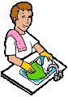

Cleaning Made Easy 
Cleaning 
During the week, rinse off used eating utensils and plates with water
and a brush. When completed, place everything in the dishwasher.
Before you go shopping on Sunday, run the dishwasher. This again enables
important multitasking to save you time in your busy schedule.
When time allows, remove the dishes and silverware from the dishwasher once
the cleaning cycle has completed. This can be done while waiting for food to
cook as well. At this point, you can repeat these three phases, and you will be
on your way to providing your own meals in a small amount of time.